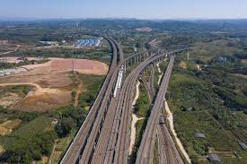

Tianjin Grand Bridge |
|
Tianjin Grand Bridge

The Tianjin Grand Bridge is another impressive example of China's infrastructure development. Here are some important facts:
This viaduct bridge is a crucial link in China's high-speed rail network, connecting major urban centers while traversing diverse landscapes. It showcases China's rapid advancement in infrastructure and transportation technology. |
|
|
© 2023 World's Biggest Bridges. All rights reserved. |
|